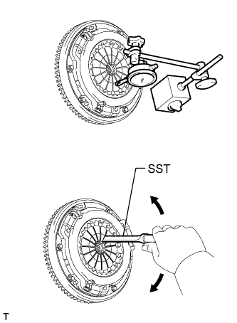

БЛОК СЦЕПЛЕНИЯ (для моделей с 5L-E) > УСТАНОВКА |
| 1. INSTALL CLUTCH DISC ASSEMBLY |
 |
Insert SST into the clutch disc. Then insert SST (together with the clutch disc) into the flywheel to install the clutch disc.
 | Flywheel Side |
| 2. INSTALL CLUTCH COVER ASSEMBLY |
 |
Align the matchmarks on the clutch cover and flywheel.
| *a | Matchmark |
Tighten the 6 bolts uniformly in the order shown in the illustration, starting with the bolt located near the knock pin on the top.
| 3. INSPECT AND ADJUST CLUTCH COVER ASSEMBLY |
|  |
Using a dial indicator with a roller instrument, measure the diaphragm spring tip alignment.
| 4. INSTALL RELEASE FORK SUPPORT |
Install the release fork support to the manual transmission unit.
| 5. INSTALL CLUTCH RELEASE BEARING ASSEMBLY |
 |
Apply release hub grease to the clutch release bearing, and then install it to the clutch release fork with the clip.
| *a | Release hub grease |
| 6. INSTALL CLUTCH RELEASE FORK SUB-ASSEMBLY |
Install the clutch release fork.
 |
Apply clutch spline grease to the spline of the input shaft.
| *a | Clutch spline grease |
| 7. INSTALL CLUTCH RELEASE FORK BOOT |
| 8. INSTALL MANUAL TRANSMISSION ASSEMBLY |
Install the manual transmission assembly (See page Нажмите здесь).